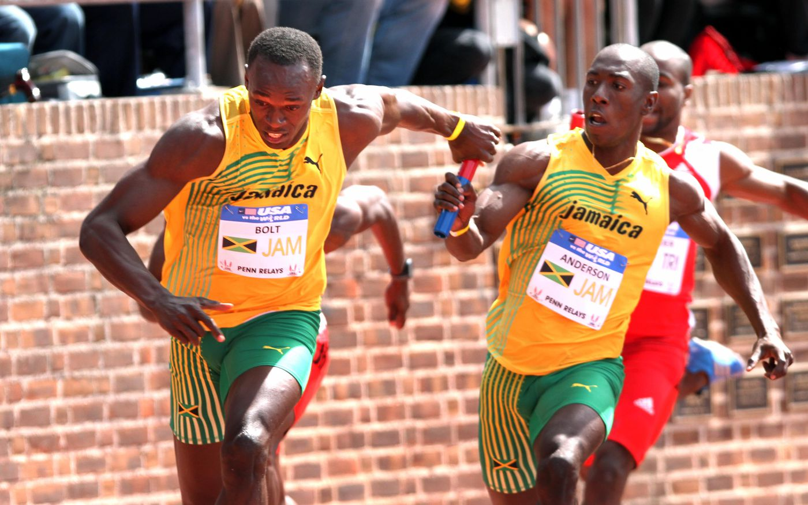
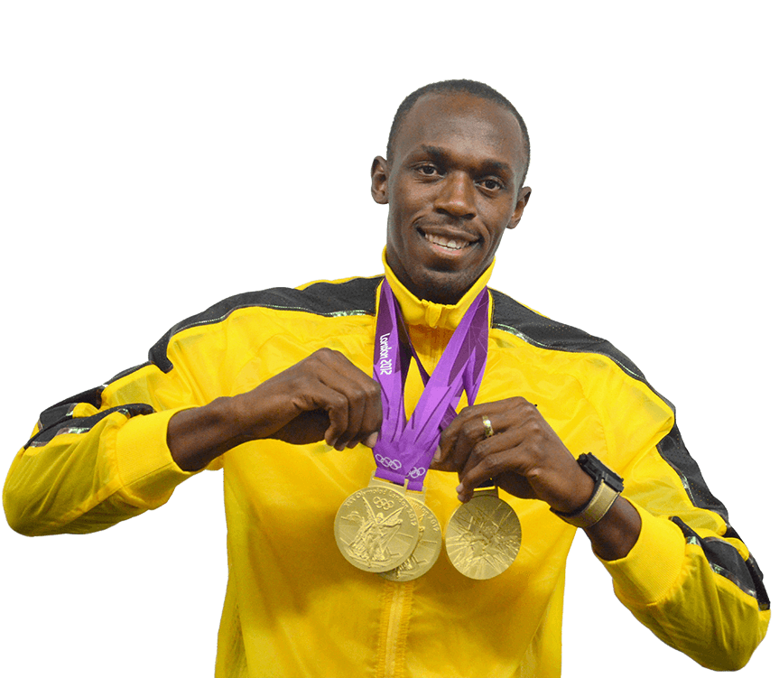
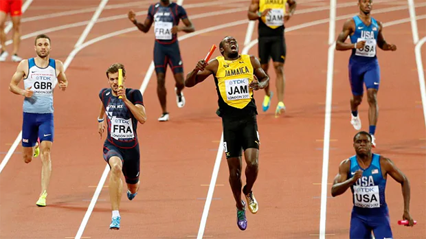

Sprint:
Races over short distances or sprints are among the oldest running competitions.The 100m sprint race has been included at the Summer Olympic Games since the first Games in 1896 for men and since 1928 for women. The 100m race is one of the most historical races along with the marathon. Introduced to the Olympic Games in 1896 for the first modern Olympiad (held in Athens, Greece). Thomas Burke (USA) won the first-ever 100-meter dash in 12.0 seconds at the 1896 Games in Athens.

Relay:
Though the concept can be traced to Ancient Greece, where a 'message stick' was delivered via a series of couriers, modern relays emulate the charity races organised by the New York fire service in the 1880s, in which red pennants were handed over every 300 yards.
The first Olympic relay took place in 1908 – but was split into two legs of 200m, followed by one of 400m and another of 800m. The first Olympic 4x100m relay for men was held in 1912; the first for women was held in 1928.
Over the last 30 years jamaica has participated in a lot olympic events.In Athletics both,long distances and sprints.Thet also participated in Women's Long Jump, Triple Jump,high jump Heptathlon, discuss, shotput, they also participated in boxing and sailing, swimming and table tennis even badminton and shooting. Even though they did not advance to the final round for some they still put the effort to try out new events over the years
Jamaica has mostly execelled in the 100m, 200m and 4×100m relay
usain bolt(dubbed the fastest man alive) He is a world record holder in the 100 metres, 200 metres and 4 × 100 metres relay. Owing to his achievements and dominance in sprint competition, he is widely considered to be the greatest sprinter of all time,
An eight-time Olympic gold medallist, Bolt is the only sprinter to win Olympic 100 m and 200 m titles at three consecutive Olympics (2008, 2012 and 2016). In addition he won two 4 × 100 relay gold medals. He gained worldwide fame for his double sprint victory in world record times at the 2008 Beijing Olympics, which made him the first person to hold both records since fully automatic time became mandatory. Bolt improved upon his second 100 m world record of 9.69 with 9.58 seconds in 2009 – the biggest improvement since the start of electronic timing. He has twice broken the 200 metres world record, setting 19.30 in 2008 and 19.19 in 2009. He has helped Jamaica to three 4 × 100 metres relay world records, with the current record being 36.84 seconds set in 2012. Bolt's most successful event is the 200 m, with three Olympic and four World titles. At the 2008 Beijing Summer Olympics, Bolt ran the 100-meter and 200-meter events. In the 100-meter final leading up to the Games, when he broke the world record, winning in 9.69 seconds. Not only was the record set without a favorable wind, but he also visibly slowed down to celebrate before he finished (and his shoelace was untied), an act that aroused much controversy later on.Bolts rival was An American runner and rival Justin Gatlin.
"This is why I came here, to the Olympics, to prove to the world that I’m the best — again,” he told reporters at a news conference. “It always feels good to go out on top, you know what I mean?”
He continued his Olympic winning streak, taking gold in the 200-meter in 19.78 seconds. "What else can I do to prove I am the greatest?" Bolt said in an interview with BBC Sport. ”I'm trying to be one of the greatest, to be among [Muhammad] Ali and Pele. I have made the sport exciting, I have made people want to see the sport. I have put the sport on a different level."
The "fastest man alive" remained undefeated in what he said would be the last race of his Olympic career, the 4x100-meter relay which he ran with teammates Asafa Powell, Yohan Blake and Nickel Ashmeade. Anchoring the race, Bolt led the Jamaican team to win gold, crossing the finish line in 37.27. Japan won silver and Canada took the bronze. It was the third consecutive gold medal win for Bolt in Rio. He ended his legendary Olympic career acknowledging the support of his fans on Twitter.
In an interview with CBS News, Bolt detailed his pride over his 2012 performance: "It's what I came here to do. I'm now a legend. I'm also the greatest athlete to live. I've got nothing left to prove."
In 2017, Bolt faced challenges on the track at the World Athletics Championships. He finished third in the men's 100 meters, taking home the bronze medal behind Christian Coleman, who won silver, and Justin Gatlin, who took home the gold. It was the first time that Bolt had been beaten at a World Athletic Championships since 2007. His struggles didn't end there: in the 4x100-meter relay, which many believed would be Bolt's final race,  he collapsed from a hamstring injury and had to cross the finish line with the help of his teammates.
In August 2017, following the World Athletic Championships, Bolt announced his retirement from track and field. “For me I don’t think one championship is going to change what I’ve done,” he said at a press conference. “I personally won’t be one of those persons to come back.”
2016 may not be Usain Bolt’s final Olympic campaign after all.
In a Sunday interview with the Jamaican network 1Spot Media, the world’s fastest man said that his coach Glen Mills believes Bolt could compete in the 2020 Tokyo Olympics.
<
“Coach said I can go on to even the next Olympics in 2020. I’m not going to say what I’m going to do, but my coaches say I should stop talking about retirement," Bolt said.
The 29-year-old announced last February that 2017 was likely to be his final season, but yesterday the mighty Jamaican said that if he’s still competing at his best, he’d be up for a fifth Olympic appearance.
“If I feel I can do it, I’ll definitely try. But for me, I want to retire on top of my game.”
Even despite injury concerns throughout the early part of last summer, Bolt retained his spot atop the sprinting world by beating out American Justin Gatlin for 100m and 200m gold at the World Championships while also anchoring the Jamaicans to 4x100m glory.